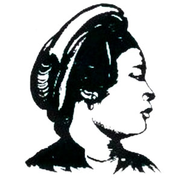
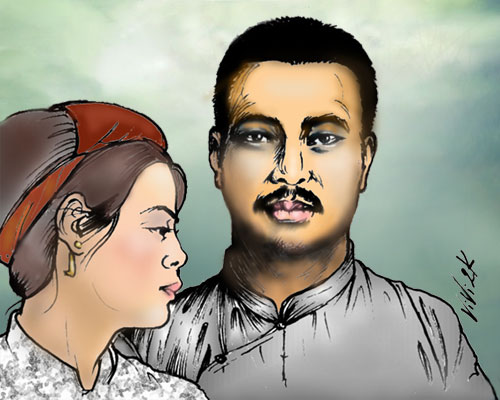

Chương XXXXIII

ột người ấy, tôi muốn nói là chị Giang, một đảng viên mà nhà đương cuộc cho là còn có công tuyên truyền cho Đảng hơn là anh Học.
Anh Học lúc trẻ con, ông, bà cưới cho một chị vợ là Nguyễn Thị Cửu. Năm 1927, khi sắp lập Đảng, anh có nói với tôi là đã ly hôn với vợ (1)
(Chú thích: Chị này lấy chống ngay sau khi ly hôn, sau này đã có 4 con).
Bây giờ nhiều người như thế lắm: anh Nho, anh Chính, đều từ hôn hay cho vợ về cả. Các anh không muốn đem cuộc đời sóng gió của mình mà làm phiền luỵ đến một người đàn bà.
Ấy vậy mà có một ngày Anh tuyên bố với các bạn là Anh xin phép để được kết hôn cùng có Giang.

Cô Giang, người ở tỉnh Bắc Giang, nên cả ba chị em cô, có ba tên là Bắc, Giang, Tỉnh. Cô Tỉnh khi ấy còn nhỏ. Còn hai chị thì đều vào đảng cách mệnh của anh Song Khê. Việt Nam Quốc Dân Đảng nguyên không thu đàn bà làm đảng viên. Các chị em đồng chí chỉ tổ chức phụ nữ đoàn. Vậy mà riêng tỉnh bộ Bắc Giang có mấy nữ đảng viên.
Là vì đó nguyên là đảng của anh Song Khê. Sau khi đảng ấy hợp với Việt Nam Quốc Dân Đảng rồi, đành lẽ cứ cho như cũ vậy… Đó là một điều lệ ngoại, dành riêng cho mấy chị ở Bắc Giang. Song chị Giang và các chị ở đó thực đã xứng đáng với các đặc điểm ấy. Làm giao thông, làm tuyên truyền, chị tỏ ra một người đồng chí có tài và đắc lực. Nhưng quý hơn hết là sự tận trung với Đảng. Trừ việc Đảng chị không còn thì giờ để làm cái gì cho đời sống riêng mình. Sau hồi 1929, chị làm việc giao thông cho chi bộ ở các nơi, luôn luôn phải gặp gỡ và cùng đi với anh Học.
“Lạ chi thạnh, khí lẽ hằng
Một giây, một buộc ai giằng cho ra.”
Sự thương yêu nhau của một đôi đồng chí tài sắc ngang nhau trạc tuổi gần nhau đâu phải là chuyện khiến chúng ta khó hiểu. Rồi một buổi sớm tốt lành kia, nhân đi gần đền Hùng vương, hai người đã đem nhau vào đền mà thề nguyện. Trong buổi định tình ấy chị cố xin Anh giao cho một khẩu súng sáu, và hứa “Nếu Học chẳng may chết vì Nước, thì Giang này cũng xin lấy khí giới này mà chết theo chồng!”.
Từ khi anh Học bị bắt, nhớ đến lời thề sơn hải, tinh thần chị bị cơn khủng hoảng to! Bỗng dưng cười, bỗng dưng khóc, chị trở nên gần như kẻ mất trí khôn. Và anh em phải mất rất nhiều công bảo vệ cho chị, để chị có thể yên tâm ở Hà Nội mà gián tiếp thăm nom anh Học.
Chiều hôm ấy, nghe tin anh Học bị giải lên Yên Bái, chị cũng đáp xe lửa đi theo hút. Chị mang theo một khẩu súng, một quả bom, định vào phá pháp trường. Nhưng bọn lính canh đã ngăn không cho chị tới gần. Đứng đằng xa, với một sức tự trị phi thường, chị đã đem nụ cười mà đáp lại nụ cười của anh Học khi sắp bước lên máy chém. Nấp trong đám người đứng xem, chị đã không lộ mảy may nỗi đau xót, cho người ngoài biết. Xem chém xong, chị quay về nhà trọ mà viết hai bức thư tuyệt mạng. Hai bức thư ấy viết trên ba trang giấy khổ hẹp, bằng nét bút chì xanh. Rồi ra chợ chị mua mấy vuông vải trắng, làm khăn để tang chồng. Buổi chiều, chị đi xe lửa sang Vĩnh Yên. Và sớm hôm sau, chị về địa hạt Đồng Vệ, cạnh làng Thổ Tang, vào thăm lại cái quán giữa đồng mà đôi vợ chồng son đã có lần cùng ngồi trò chuyện. Nghĩ đến chồng, nghĩ đến Đảng, nghĩ đến Nước, cái thiên tính muốn sống với cái ý định phải chết đã giao tranh kịch liệt!

Sự giao tranh ấy đã làm cho chị bơ phờ mỏi mệt. Cái quyết tâm đến với cái mỏi mệt ấy, bước ra ngoài quán, chị cầm súng tự bắn vào thái dương bên phải một phát, rồi ngã vật xuống, súng quăng ra một bên.
Khi ấy chị đã có mang mấy tháng. Viên Tri phủ Vĩnh Tường trình tỉnh khám qua rồi báo về Hà Nội cho mật thám đem thầy thuốc lên khám lại. Do cái tên ký “Nguyễn Thái Học phu nhân”, chúng biết là chị. Và bởi biết là chị, nên chúng tìm cách trả thù ở cái xác chết: Sau khi lột áo quần ra khám rồi, chúng không hề mặc trả lại. Và còn để thi hài bộc lộ ở dưới ánh nắng, dưới nước mưa, dưới sự bâu hút của ruồi, nhặng, đến hai, ba hôm, rồi mới cho mai táng!
Hai bức thư của chị như sau này:
Bức thư thứ nhất:
Ngày 17 tháng 6 năm 1930.
Thưa Thầy Mẹ,
Con chết là vì hoàn cảnh đã bó buộc con, không báo được thù cho nhà, rửa được nhục cho nước!
Sau khi đã đem tấm lòng trinh bạch dâng cho chồng con ở đền Hùng, giờ con tìm về chỗ quê cha, đất tổ mượn phát súng này mà kết liễu đời con!
Đứa con dâu thất hiếu kính lạy.
Bức thư thứ hai
Anh đã là người yêu nước
Không làm tròn được nghĩa vụ cứu nước. Anh giữ lấy tấm linh hồn cao cả để mà chiêu binh, rèn lính dưới suối vàng!
Phải chịu đựng nhục nhã, mới có ngày mong được vẻ vang. Các bạn đồng chí phải sống lại sau Anh, để đánh đổ cường quyền mà cứu lấy đồng bào đau khổ!
Thơ:
Thân không giúp ích cho đời!
Thù không trả được cho người tình chung
Dẫu rằng đương độ trẻ trung
Chết vì dân chúng thề lòng hy sinh
Con đường tiến bộ mông mênh,
Éo le hoàn cảnh buộc mình biết sao?
Bây giờ hết kiếp thơ đào,
Gian nan bỏ mặc đồng bào từ đây!
Dẫu rằng chút phận thơ ngây.
Sổ đồng chí đã có ngày ghi tên!
Chết đi dạ những buồn phiền
Nhưng mà hoàn cảnh truân chuyên buộc mình
Quốc kỳ phất phới trên thành,
Tủi thân không được chết vinh dưới cờ
Cực lòng nhỡ bước sa cơ!
Chết sầu, chết thảm, có thừa xót xa!
Thế ru? Đời thế ru mà.
Đời mà ai biết? Người mà ai hay?
Đọc bức thư thứ hai, đủ rõ tâm trạng chị Giang khi đó như thế nào: “Chết theo nước! Chết theo chồng!”. Ở trong cái trí nghĩ, mê man vì đau đớn bấy giờ, các sự vật có lẽ đều biến chuyển, mê ly, không còn có giới hạn rõ ràng nữa. Dù vậy, cho đến phủt cuối cùng lòng chị vẫn không nhãng quên cái bổn phận làm dân đối với đồng bào, làm con đối với cha mẹ! Và vẫn kỳ vọng ở các đồng chí chết sau vì chị mà trả hộ thù nhà, rửa xong nhục nước!
Tấm lòng trách nhiệm ấy là một cái đặc sắc chung của người phương Đông chúng ta, bất cứ ở địa vị nào.
HẾT